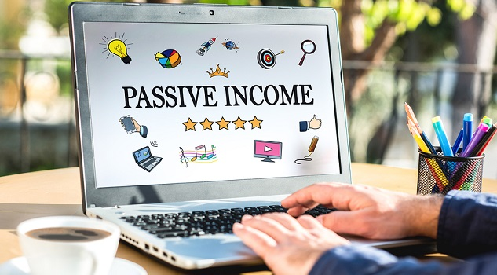

What Is Passive Income and How Do I Build It? | DaveRamsey.com
 Skip to Main ContentEnter to Win Cash for Christmas!
Menu Sign In Home Home We Can Help You: Take Control of Your Money Lead and Grow Your Business Teach the Next Generation Equip and Inspire Your Church Our Company Careers Press Room Contact Us Get Started Get Started Easy Ways to Get Started Ramsey+ Free Trial Free Baby Steps Assessment The Basics New to Dave The 7 Baby Steps The Blog Dave’s Newsletter FAQs Budgeting EveryDollar Budgeting Tool The Truth About Budgeting Dave’s Budgeting Forms Beat Debt How to Get Out of Debt View All Topics Shows Shows The Dave Ramsey Show Listen or Watch Now Latest Shows Podcast Apple Podcasts Google Podcasts Advertising and Syndication About the Show Station Finder Debt-Free Scream Visit the Studio Millionaire Questionnaire Ask Dave Podcasts The Dave Ramsey Show The EntreLeadership Podcast The Chris Hogan Show The Rachel Cruze Show The Christy Wright Show The Ken Coleman Show The Dr. John Delony Show See All Podcasts YouTube The Dave Ramsey Show The Rachel Cruze Show Anthony ONeal Classes Classes Individuals and Families Take Financial Peace University Lead Financial Peace University Financial Coaching Find a One-on-One Coach Financial Coach MasterTraining K–12 and College Education Middle Schools High Schools Colleges Homeschools Businesses EntreLeadership Financial Wellness SmartDollar Business Boutique Academy Other Organizations For Churches For Nonprofits For Military For Government Live Events Live Events Life and Money Financial Peace Live Smart Conference Money & Marriage Financial Peace Accelerated Business Leadership EntreLeadership Summit EntreLeadership Master Series For Women Business Boutique Personalities Ramsey Personalities Rachel Cruze Chris Hogan Christy Wright Ken Coleman Anthony ONeal Dr. John Delony Get Involved Volunteer Sponsorships Group Sales Tools Tools Budgeting EveryDollar Budget Tool Zero-Based Budgeting Beat Debt How to Get Out of Debt Dave’s Advice on Debt Build Wealth Investing Investment Calculator Dave’s Advice on Investing Home Buying Dave’s Home Buyers Guide Mortgage Calculator Mortgage Payoff Calculator Home Selling Dave’s Home Sellers Guides Tax Tips Do You Need a Tax Pro? Dave Recommends Dave Recommends Dave’s ELPs Endorsed Local Providers Real Estate Insurance Tax Services Why Use an ELP? Contact Us Become an ELP SmartVestor Investing Become a SmartVestor Pro Companies You Can Trust Zander Insurance Term Life Insurance Identity Theft Protection Disability Insurance Churchill Mortgage Dollar Car Rental eMeals Meal Planning SimpliSafe Home Security Timeshare Exit Team Mama Bear Legal Forms View All Advertisers Store Store Classes, Books and More Financial Peace University Books From Dave Envelope Systems Kids and Teens Bundles and Deals Cyber Monday Sale Retirement
What Is Passive Income and How Do I Build It?
6 Minute Read | November 30, 2020
Chris Hogan
Chris Hogan
If you’re a forward-focused thinker, you may be dreaming about leaving the workforce to enjoy an easier life in retirement or you might even be considering retiring early. But a dream without a plan is just a wish.
To put some wheels on that dream, you need to consider passive income. There are plenty of different passive income options and explanations of how to build it. If you’re new to the idea, I’m about to break it down for you.
What Is Passive Income?
Passive income is money you earn in a way that requires little to no daily effort to maintain. Some passive income ideas like renting out property or building a blog may take some work to get up and running, but they could eventually earn you money while you sleep.
Why Build Passive Income?
Your income is your greatest wealth-building tool a tool that typically requires your active participation in the form of a full-time job. You know what I’m talking about! Even if you love your job, I’m willing to bet you wouldn’t mind earning some extra income without the blood, sweat, tears and time commitment of another job. Here’s what building a passive income can do for you:
Increase your wealth-building plan
Create an opportunity to retire early
Protect you from a complete loss of income if you lose your job
Provide an additional source of income when you’re no longer able to work or if you outlive your retirement fund
How Much Money Can I Make?
Passive income generally won’t make you wealthy overnight, so forget about any get-rich-quick schemes you’ve heard of. But steady, profitable passive income options can build some serious money over the long haul. We’re talking anywhere from a few thousand dollars to hundreds of thousands of dollars depending on the income stream.
How to Build Passive Income
Passive income can be built in many ways, but first let’s take a look at what it truly is and which income streams are available.
Investing
When we say passive income, some people tend to think of investing because it can produce the largest results with the least amount of work. But your retirement plan and passive income should be thought of as two separate things.
Be confident about your retirement. Find an investing pro in your area today.
The whole idea behind long-term investing is to create income for retirement. You want to make sure you’re investing in your company retirement plan, like a 401(k) if your fund choices are good and they offer a match in addition to other tax-favored plans like a Roth IRA if your company doesn’t offer a Roth 401(k).
These are great options for building a solid retirement plan, but you will incur taxes and penalties for any withdrawals before a certain age. With retirement planning, you want to let your money grow for the long haul and not touch it!
On the other hand, we want to think about passive income as a type of low-effort income that can be accessed at any time . Let’s take a look at some of these options below.
Real Estate
One way to build passive income after you’re debt-free and have some cash saved up is by purchasing real estate and renting it out to tenants .
Rental property can be a great source of extra income, but it isn’t the most passive choice because you’ll put a lot of time and effort into managing the property unless you hire a property management company.
I suggest buying close by so you can personally keep an eye on the property. Find a real estate agent who knows your area well so you can buy property in a location that will attract renters.
If you go the rental property route, you need to be in control of your property. I don’t recommend real estate investment options such as a real estate investment trust (REIT) that pool your money into properties under its control while other people make decisions about your property for you.
Finally, before you buy rental property, pay off your own home first and purchase your investment property with cash.
Don’t ever go into debt to buy rental property!
Start a Blog/YouTube Channel
If you have a brilliant idea that appeals to a specific audience, you could create something like an educational blog or a YouTube tutorial series to generate online traffic. If your content is engaging and it sees enough daily traffic, you could sell ad space on your blog or ad spots on your channel. After you put in the heavy lifting, you can sit back, relax, and enjoy streams of passive income.
Sell Digital Products
If you’ve discovered how to create content that produces enough traffic to host ads, you could make a product your audience would love to buy. That could be anything from a simple e-book to a complex app that generates income for years after it’s released.
Store People’s Stuff
People have a lot of stuff and they’re always looking for inexpensive ways to store it. What could be easier than having people pay you to store their stuff? Building passive income by offering storage could involve a large-scale investment of buying a storage facility (with cash!) or something simpler like offering your basement or shed. You’ll just need to ensure their items are safe and secure.
Rent Out Useful Items
Do you have any items you don’t use all the time that others would like to borrow? Useful items like a truck, trailer, trampoline, kayak or even your own yard could earn you passive income as rental items. This also includes renting out spare rooms in your house with the help of websites like Airbnb. Hop on your favorite social media site, upload pictures of your items, set a price, and tell the world they’re ready for rent.
Passive Income Tips
The list of passive income ideas could go on forever. As you search for the best fit, keep an eye out for ideas that show positive long-term track records. Do other people make money on the idea? Has it come back to bite someone who tried it? Some people ask me about passive income options like drink, vending or other rental machines in public places. The bottom line? Don’t fall for any passive income ideas that promise a quick return or require huge amounts of money up front. They will sabotage your other financial goals. Look for ideas that are steady, profitable and trustworthy. Do your research. And never go into debt!
Don’t fall for any passive income ideas that promise a quick return or require huge amounts of money up front. Chris Hogan
Build Wealth That Lasts
Did any of these ideas interest you in building passive income? Want a clearer picture of how different income streams might fit into your overall wealth-building strategy? If so, connect with a financial professional through our SmartVestor program and create a game plan to start building wealth that lasts. A financial pro will look at all your income streams and help you develop a financial plan that meets your individual needs.
Find a SmartVestor Pro today!
About the author
Chris Hogan
Chris Hogan is a two-time #1 national best-selling author, financial expert and host of The Chris Hogan Show . He is a frequent guest on Fox News, Fox Business, Yahoo! Finance and the Rachael Ray Show . Since 2005, Chris has served at Ramsey Solutions, where he gives practical money advice on retirement, investing and building wealth. Learn More.
More Articles From ChrisRelated Articles
How to Invest in Real Estate
14 Minute Read | Retirement
Interested in building wealth through real estate investing? Here s how to do it.
Chris Hogan
Read MoreHow to Earn Passive Income From Real Estate
6 Minute Read | Retirement
What do you need to know about earning passive income from real estate? Find out all about it here!
Chris Hogan
Read MoreWhat Are Target Date Funds? Should I Invest in One?
7 Minute Read | Retirement
With target date funds, you start by investing in high-risk, high-reward options and then switch to low-risk, low-reward options as you get closer to retirement.
Chris Hogan
Read More Thank you! Your guide is on its way.